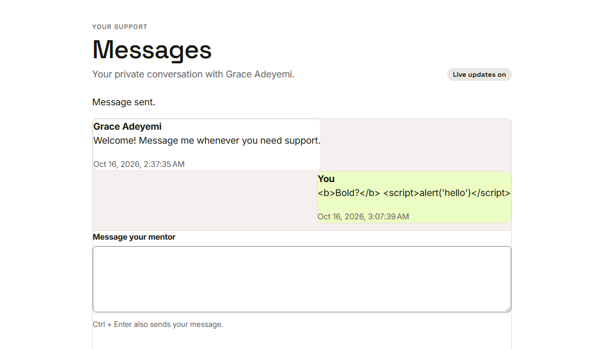

Waypoint · Video 113
Checking what goes in and what comes out
Validated on the way in, shown as plain text on the way out
The form says what is wrong
A short sentence under each box
The server checks again
Type, length, range and format of every value
A refused request names each field and what is wrong
A request that skips the form is still checked
Shown exactly as typed

Tags and all, as ordinary words
Two quiet protections
Database queries use parameters, never glued-in text
Uploaded files are checked for type and size
Files are served with an instruction not to guess their type
Things to remember
The server checks every request, whatever the form did
Mistakes come back as plain messages naming the field
Typed text is shown as text, never as code
Queries use parameters; uploads are checked